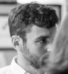

David Singerman
Assistant Professor of History and American Studies
University of Virginia
I'm an assistant professor of history and American studies at the University of Virginia. (Click here for my History Department webpage.) I am also the Director of Undergraduate Program for American Studies.
My first book, Unrefined: How Capitalism Reinvented Sugar, is out September 2nd, 2025 from the University of Chicago Press.
I earned my PhD in 2014 from MIT's program in History, Anthropology, and Science, Technology, and Society (HASTS), supervised by Professor David Kaiser. My dissertation, "Inventing Purity in the Atlantic Sugar World, 1860-1930," won the Krooss Prize for Best Dissertation from the Business History Conference in the US, and the Coleman Prize for Best Dissertation from the Association of Business Historians in the UK.
From September 2015 to June 2016 I was a research associate at Harvard Business School, working with Professor Eugene Soltes. Before that, I was a postdoctoral fellow at the Rutgers Center for Historical Analysis, as part of their project on "Networks of Exchange: Mobilities of Knowledge in a Globalized World." I've also been a lecturer at MIT and at the University of Pennsylvania.
I live in Charlottesville, VA.ORCID 0009-0001-5365-5815 | LinkedIn
| LinkedIn